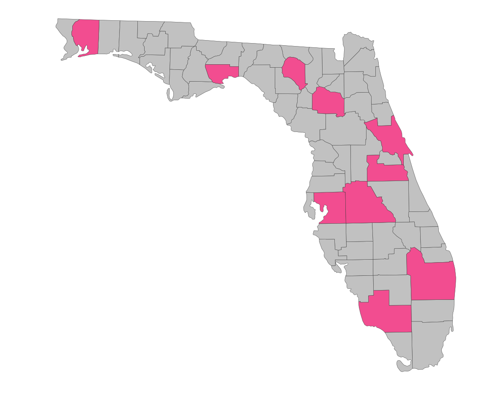
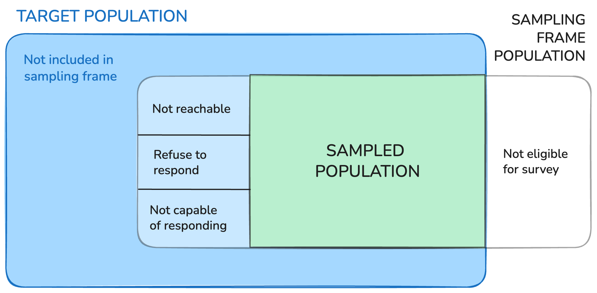

| student | track | scores | size |
|---|---|---|---|
| 1 | I | 80 | 55 |
| 3 | I | 68 | 55 |
| 29 | II | 68 | 80 |
| 30 | II | 52 | 80 |
| 45 | III | 61 | 65 |
| 35 | III | 42 | 65 |
Survey Weights and Non-Response
This class
In this class we are only covering stratification formally, but I want you to be aware that there are many more complex things to do!
There are two elements of complex sampling designs that must be taken into account to make valid inferences:
If…
Let \(w_j\) be a weight for unit \(j\)
\[\hat{\mu}_w = \frac{\sum w_jy_j}{\sum w_j} \qquad \qquad \hat{\tau}_w = N\frac{\sum w_jy_j}{\sum w_j}\]
Estimating Variability
As always we don’t just care about the point estimates \(\hat{\mu}_w\) and \(\hat{\tau}_w\), but also how much sampling variability there is in these estimates!
There is a special way to estimate the variability, \(SE(\hat{\mu}_w)\) and \(SE(\hat{\tau}_w)\)…
… we are just goint to let the survey package in R handle it
\[w_j = \frac{1}{\pi_j}\]
\[\hat{\mu}_w = \bar{y}_{st} = \frac{1}{N}\displaystyle\sum_{g = 1}^L N_g\bar{y}_g\]
… let’s do the math
\(\hat{\mu}_w = \frac{\sum w_jy_i}{\sum w_j} = \frac{\displaystyle\sum_{g=1}^L \sum_{i=1}^{n_g}\frac{N_g}{n_g} y_{gi}}{\displaystyle\sum_{g=1}^L \sum_{i=1}^{n_g} \frac{N_g}{n_g}}\)
| student | track | scores | size |
|---|---|---|---|
| 1 | I | 80 | 55 |
| 3 | I | 68 | 55 |
| 29 | II | 68 | 80 |
| 30 | II | 52 | 80 |
| 45 | III | 61 | 65 |
| 35 | III | 42 | 65 |
Goal: Estimate total number of building permiits for housing units issued in Florida in 2000
Sample: 10 of Floridas 67 counties by dropping 10 random points on the map of the state

| Florida Housing Permit Data | |||
| Table 11.1 in ESS | |||
| County | Area (\(A_i\)) | # Permits (\(y_i\)) | Weight (\(w_i\))1 |
|---|---|---|---|
| Alachua | 874 | 1,973 | 0.114 |
| Santa Rosa | 1,017 | 1,056 | 0.098 |
| Polk | 1,874 | 4,746 | 0.053 |
| Palm Beach | 1,974 | 10,504 | 0.051 |
| Collier | 2,025 | 7,970 | 0.049 |
| Orange | 907 | 10,239 | 0.110 |
| Suwannee | 688 | 125 | 0.145 |
| Volusia | 1,103 | 3,587 | 0.091 |
| Wakulla | 607 | 394 | 0.165 |
| Hillsborough | 1,051 | 11,656 | 0.095 |
| 1 Weights are multiplied by 100 for visibility. | |||
# copy this code if you want to play with this data!
florida_permits <- tibble(
county = c("Alachua","Santa Rosa","Polk","Palm Beach",
"Collier","Orange","Suwannee","Volusia","Wakulla","Hillsborough"),
area = c(874, 1017, 1874, 1974, 2025, 907, 688, 1103, 607, 1051),
permits = c(1973, 1056, 4746, 10504, 7970, 10239, 125, 3587, 394, 11656)
) |>
mutate(weight = 1/area)Ignored the unequal probability of sampling and treat this like a SRS …
estimate the total as 350,075 permits with an SE of 87,904 permits
Let \(w_j\) be a weight for unit \(j\)
\[\hat{\mu}_w = \frac{\sum w_jy_j}{\sum w_j} \qquad \qquad \hat{\tau}_w = N\frac{\sum w_jy_j}{\sum w_j}\]
\[\hat{\mu}_w = \frac{\sum w_gY_g}{\sum w_g n_g} \qquad \qquad \hat{\tau}_w = N\frac{\sum w_gY_g}{\sum w_g n_g}\]
A stratified sample of 1,000 households is selected from two regions (North and South) in SLO county.
| Strata | \(N_g\) | \(n_g\) | Base Weight |
|---|---|---|---|
| North (g = 1) | 40,000 | 400 | |
| South (g = 2) | 120,000 | 600 |
Calculating base weight \(w_g\)?
\(w_1\) =
\(w_2\) =
Strata |
N |
n |
# responses \(n^*_g\) |
# of “yes” \(x_g\) |
Base Weight |
|---|---|---|---|---|---|
| North (g = 1) | 40,000 | 400 | 200 | 170 | 100 |
| South (g = 2) | 120,000 | 600 | 530 | 330 | 200 |
Let \(x_g = \sum_{i=1}^{n_g} y_{gi}\) where \(y_{gi}\) is a binary variable that takes the value of 1 if the household has access to primary healthcare.
Strata |
N |
n |
# responses \(n^*_g\) |
# of “yes” \(x_g\) |
Base Weight |
|---|---|---|---|---|---|
| North (g = 1) | 40,000 | 400 | 200 | 170 | 100 |
| South (g = 2) | 120,000 | 600 | 530 | 330 | 200 |
\(\hat{p} = \frac{\sum x_g}{\sum n^*_g}=\)
\(\hat{p}_w = \frac{\sum w_gx_g}{\sum w_gn^*_g} =\)
Nonresponse adjusted base weight = \([\text{base weight}]\times[\frac{1}{\text{response rate}}]\)
\[w^*_g = \frac{w_g}{r_g}\]
Strata |
\(N_g\) |
\(n_g\) |
# resp. \(n^*_g\) |
resp. rate \(r_g\) |
# “yes” \(x_g\) |
\(w_g\) |
\(w^*_g\) |
|---|---|---|---|---|---|---|---|
| North | 40,000 | 400 | 200 | 170 | 100 | ||
| South | 120,000 | 600 | 530 | 330 | 200 |
\(r_1= \qquad \qquad \qquad \qquad \qquad \qquad r_2=\)
\(w_1^*= \qquad \qquad \qquad \qquad \qquad \qquad w_2^*=\)
Strata |
\(N_g\) |
\(n_g\) |
# resp. \(n^*_g\) |
resp. rate \(r_g\) |
# “yes” \(x_g\) |
\(w_g\) |
\(w^*_g\) |
|---|---|---|---|---|---|---|---|
| North | 40,000 | 400 | 200 | 0.50 | 170 | 100 | 200 |
| South | 120,000 | 600 | 530 | 0.88 | 330 | 200 | 226 |
\(\hat{p}_{adj} = \frac{\sum w^*_gx_g}{\sum w^*_gn^*_g} =\)
| Estimator | \(\hat{p}\) | \(SE(\hat{p})\) |
|---|---|---|
| Unweighted | 0.685 | 0.015 |
| Strata Weighted | 0.659 | 0.0008 |
| Nonresponse Adjusted Weighted | 0.679 | 0.0008 |
includes person weights that estimate the number of people in the target population that each person represents. In general, since population units may be sampled with different selection probabilities and since response rates and coverage rates may vary across subpopulations, different responding units represent different numbers of units in the population. The use of weights in survey analysis compensates for this differential representation, thus producing estimates that relate to the target population. - Census Bureau
Researchers using BRFSS data should conduct analyses with complex sampling procedures; they also should appropriately stratify and weight the data in their work. Potential bias resulting from selection probabilities and noncoverage among segments of the population can be reduced through weighting. - BRFSS
| Strata | Income | Pop Size | # resp. | # yes |
|---|---|---|---|---|
| North (g = 1) | High | 20,000 | 120 | 110 |
| North (g = 1) | Low | 20,000 | 80 | 60 |
| South (g = 2) | High | 80,000 | 360 | 250 |
| South (g = 2) | Low | 40,000 | 170 | 80 |
Example procedure:
and there may be other layers of adjustments for other elements of the complex sampling design!
